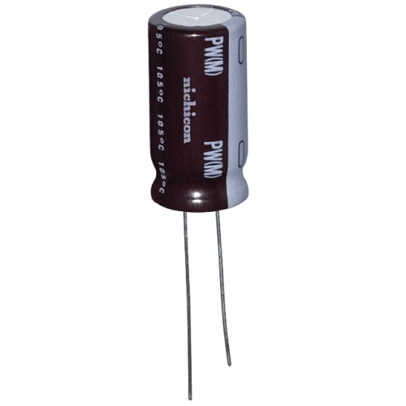
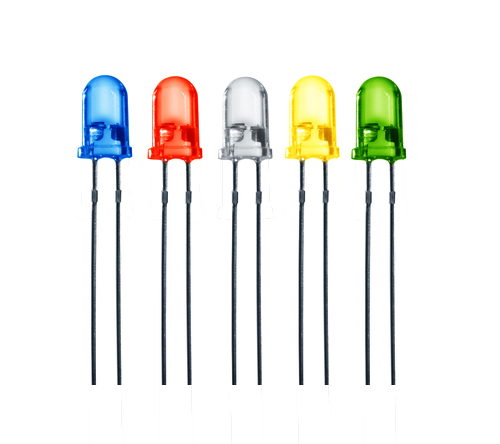
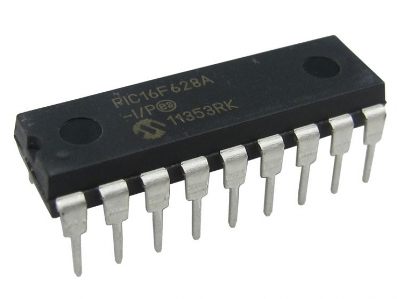
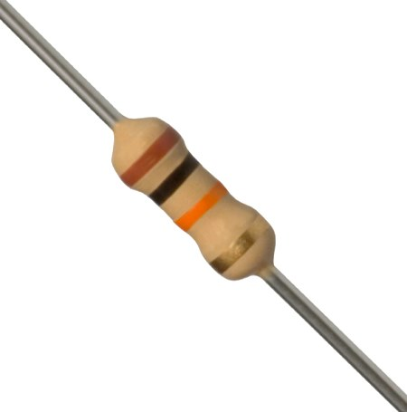

In de eerste les van het vak projectwerk electronica-ict hebben we een basis gekregen van elektronica over onder andere condensatoren, led's, potentiometers, IC's en weerstanden. van deze weerstanden hebben we gezien hoe men aan de hand van de kleurringen de juiste waarde van de weerstand konden berekenen. Na deze theorie gingen we alles in de praktijk uitvoeren. Alle componenten moesten gesoldeerd worden op een printbordje. Hierbij werd er eerst uitgelegd hoe je moet solderen en hoe de techniek juist in zijn werk gaat. Voor de meesten was het de eerste keer, voor ons eerder een opfrissing. Wanneer onze eerste solderingen na controle waren goedgekeurd mochten we de weerstanden en potentiometers op de printplaat solderen. Dit werd gedaan door één van de groepsleden. De andere maakte de kabels voor de verbindingen met de schakelaars en led strip klaar door kabels van 20cm te knippen. Dan beide kanten ongeveer een halve centimeter te strippen en te vertinnen. Waarna we aan één kant een opsteekcontact soldeerden met daarover een krimpkous. Dit laatste doet men om ervoor te zorgen dat er geen metaal bloot licht, waardoor men er zich niet kan aan elektrocuteren.
   